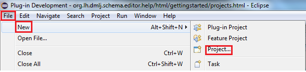
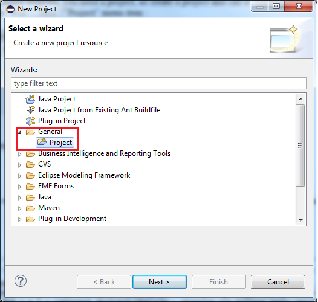
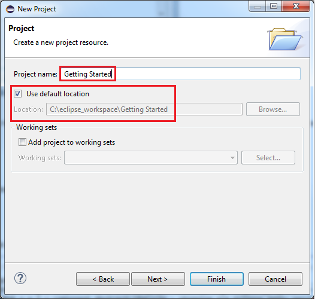

Projects
When you first started Eclipse, it made you choose a workspace. That workspace corresponds to a
folder on your workstation's file system which will contain, amongst others, the schema diagrams you
create with the CA IDMS/DB Schema Diagram Editor.
Before you can create or import a schema diagram, you need a project, so create a project and call
it “Getting Started” for instance. The following screenshots illustrate this process; begin with
selecting the “File”/”New”/”Project” menu item :

Make sure you select the correct project creation wizard on the wizard selection page; create a
general project :

After pressing the Next button, you will be asked to specify a name for your project; enter “Getting
Started” and press the Finish button. Leave the “Use default location” option checked :

Your project will now have been created in your workspace :
![[getting started project]](../../images/getting_started_project.png)
Your project is now ready to contain IDMS schema diagrams.